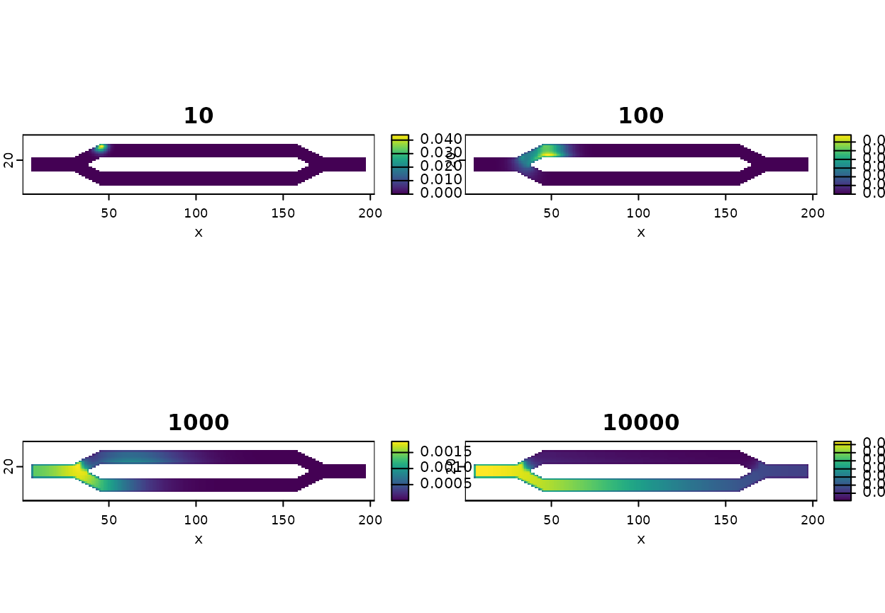
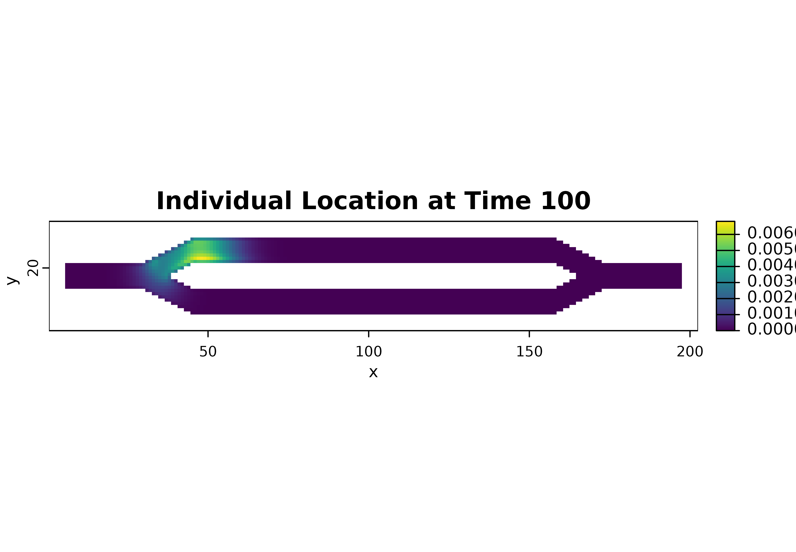
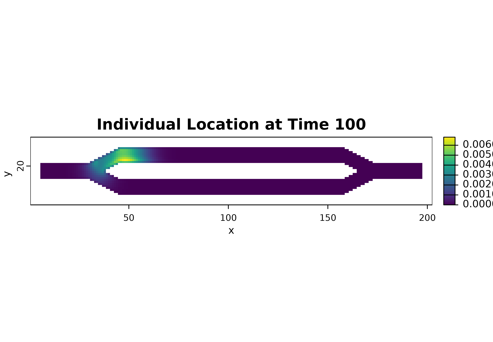
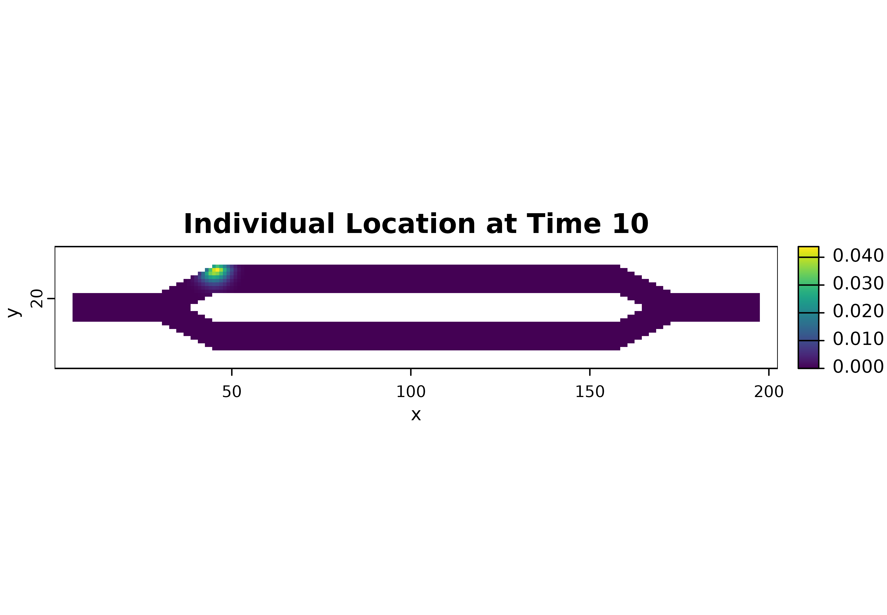
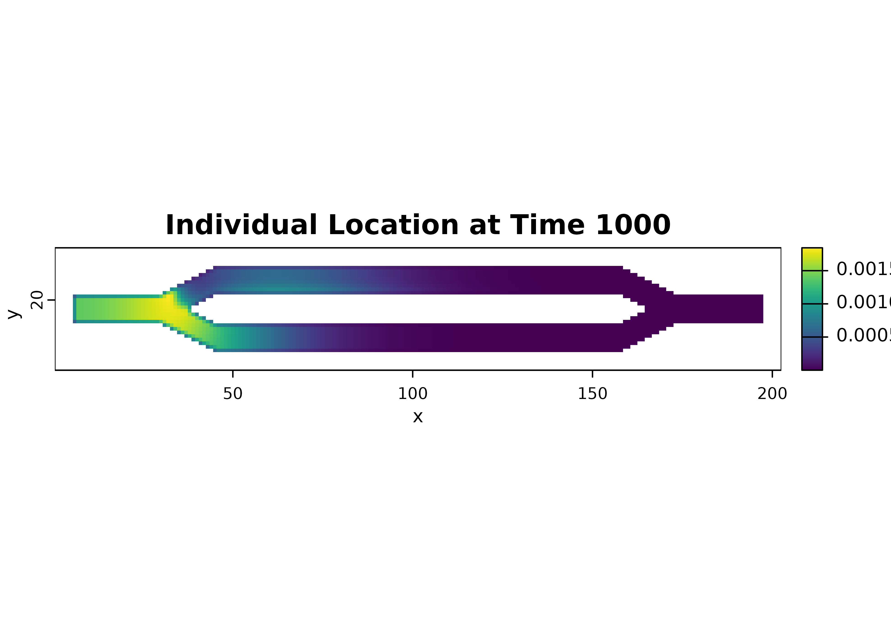
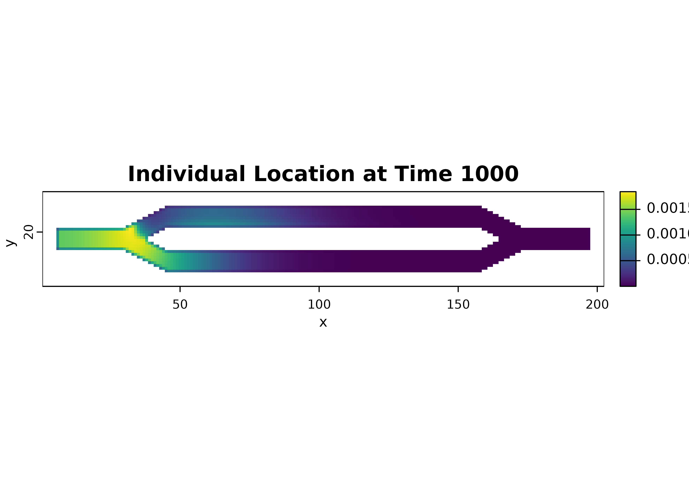

Temporal Analysis
Andrew Marx
2023-05-08
Source:vignettes/tutorial-temporal.Rmd
tutorial-temporal.RmdIntroduction
This tutorial shows the basics of working with the short-term temporal metrics and how to plot them using the base plotting tools in R.
Setup
# First step is to load the libraries. Not all of these libraries are stricly
# needed; some are used for convenience and visualization for this tutorial.
library("terra")
library("samc")
library("viridisLite")
# "Load" the data. In this case we are using data built into the package.
# In practice, users will likely load raster data using the raster() function
# from the raster package.
res_data <- samc::example_split_corridor$res
abs_data <- samc::example_split_corridor$abs
# To make things easier for plotting later, convert the matrices to rasters
res_data <- rasterize(res_data)
abs_data <- rasterize(abs_data)
# Setup the details for our transition function
rw_model <- list(fun = function(x) 1/mean(x), # Function for calculating transition probabilities
dir = 8, # Directions of the transitions. Either 4 or 8.
sym = TRUE) # Is the function symmetric?
# Create a samc object using the resistance and absorption data. We use the
# recipricol of the arithmetic mean for calculating the transition matrix. Note,
# the input data here are matrices, not RasterLayers.
samc_obj <- samc(res_data, abs_data, model = rw_model)Temporal Analysis
Given a starting location, we’re going to calculate the probabilities of where an individual will be at varying time steps. The starting location is going to be cell 1 in the landscape, which is the first non-NA cell going in a left-to-right and top-to-bottom order. The actual analysis and visualization will be shown two ways.
# First, let's specify the time steps we are interested in
time_steps <- c(10, 100, 1000, 10000)The easiest, most efficient, and safest approach to doing this is using the time step vector inputs added in version 1.1.0.
# First, calculate the metric for the entire vector of time steps
results <- distribution(samc_obj, origin = 1, time = time_steps)
# The result is a list of vectors. Note that the list is named with the time steps
str(results)
#> List of 4
#> $ 10 : num [1:2624] 0.0246 0.0306 0.0261 0.0193 0.0125 ...
#> $ 100 : num [1:2624] 0.00256 0.00336 0.00338 0.00334 0.00326 ...
#> $ 1000 : num [1:2624] 0.000212 0.000284 0.000295 0.000307 0.00032 ...
#> $ 10000: num [1:2624] 3.09e-05 3.97e-05 3.93e-05 3.88e-05 3.83e-05 ...
# We can take this list, and use map() to convert it to a list of RasterLayers.
results_map <- map(samc_obj, results)
str(results_map, max.level = 1) # max.level is to hide a lot of gory details
#> List of 4
#> $ 10 :S4 class 'SpatRaster' [package "terra"]
#> $ 100 :S4 class 'SpatRaster' [package "terra"]
#> $ 1000 :S4 class 'SpatRaster' [package "terra"]
#> $ 10000:S4 class 'SpatRaster' [package "terra"]
# A list of SpatRasters can be turned
results_stack <- rast(results_map)
# Let's look at the names
names(results_stack)
#> [1] "10" "100" "1000" "10000"
# RasterStacks are convenient for a lot of different things, like processing the
# rasters all at once using spatial methods. But we're just going to plot them
plot(results_stack, xlab = "x", ylab = "y", col = viridis(256))
If you want more control, the following shows how to loop through the results using two different options
# The results of individual time steps can be retrieved by either index or by name
results[[3]]
#> [1] 0.0002122761 0.0002838443 0.0002953125 0.0003074062 0.0003195378
#> [6] 0.0003313612 0.0003426443 0.0003532239 0.0003629837 0.0003718411
#> [11] 0.0003797378 0.0003866344 0.0003925059 0.0003973388 0.0004011292
#> [16] 0.0004038814 0.0004056069 0.0004063231 0.0004060532 0.0004048254
#> [ reached getOption("max.print") -- omitted 2604 entries ]
results[["1000"]]
#> [1] 0.0002122761 0.0002838443 0.0002953125 0.0003074062 0.0003195378
#> [6] 0.0003313612 0.0003426443 0.0003532239 0.0003629837 0.0003718411
#> [11] 0.0003797378 0.0003866344 0.0003925059 0.0003973388 0.0004011292
#> [16] 0.0004038814 0.0004056069 0.0004063231 0.0004060532 0.0004048254
#> [ reached getOption("max.print") -- omitted 2604 entries ]
# The latter is particularly useful in making reliable for loops because indexed
# for loops can be harder to troubleshoot if something goes wrong.
for (ts in time_steps) {
name <- as.character(ts)
r <- results[[name]]
r_map <- map(samc_obj, r)
plot(r_map, main = paste("Individual Location at Time", ts), xlab = "x", ylab = "y", col = viridis(256))
} 


# For comparison, here is an indexed for loop that does the same thing
for (i in 1:length(time_steps)) {
name <- as.character(time_steps[i])
r <- results[[i]] # or we could replace `i` with `name` on this line
# ...
}Previous version required individually calculating the metric for each time step. This is ultimately slower computationally and more error prone for users that are not comfortable with for loops, but is included here for posterity.
for (ts in time_steps) {
dist <- distribution(samc_obj, origin = 1, time = ts)
dist_map <- map(samc_obj, dist)
plot(dist_map, main = paste("Individual Location at Time", ts), xlab = "x", ylab = "y", col = viridis(256))
} 
